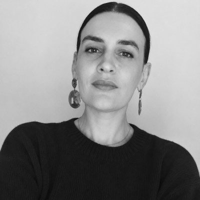

About

My work explores the intersection of fashion, visual culture, and digital experimentation — through teaching, independent research tools, and collaborations with brands on strategic narratives.
I studied Communication Sciences at the University of Padua, where my thesis examined collaborations between fashion brands and contemporary art beyond traditional patronage models.
I began my career at the Venice Biennale, managing social media communication across the Art, Architecture, Music, Dance, and Cinema departments.
I later joined Versace, managing their first social media accounts and contributing to the launch of the brand’s e-commerce platform while overseeing the editorial management of content pages, newsletters and special projects.
After completing an MA at the London College of Communication (University of the Arts London) — graduating with Distinction in Sound Art with a focus on gender and feminist theory — I began working as a freelance content strategist, developing content projects that mix creative ideas with editorial planning rooted in cultural research and trend scanning.
I have collaborated with brands such as Valextra, Corneliani, and Trussardi, and with the boutique agency K-448, contributing to projects for Gucci Equilibrium, Moët & Chandon, Bulgari, Aspesi, Elena Mirò, and iBlues.
I currently teach Project Methodology of Visual Communication and Digital Strategy at NABA – Nuova Accademia di Belle Arti, Milan and Content Strategy at IED, Milan.
Alongside teaching, I develop independent tools and frameworks exploring content direction, visual culture, and digital communication strategies, and collaborate with fashion brands through consulting and workshops.
I also compose music through my independent piano composition project, exploring sound as another way to give shape to thoughts, experiences and feelings.